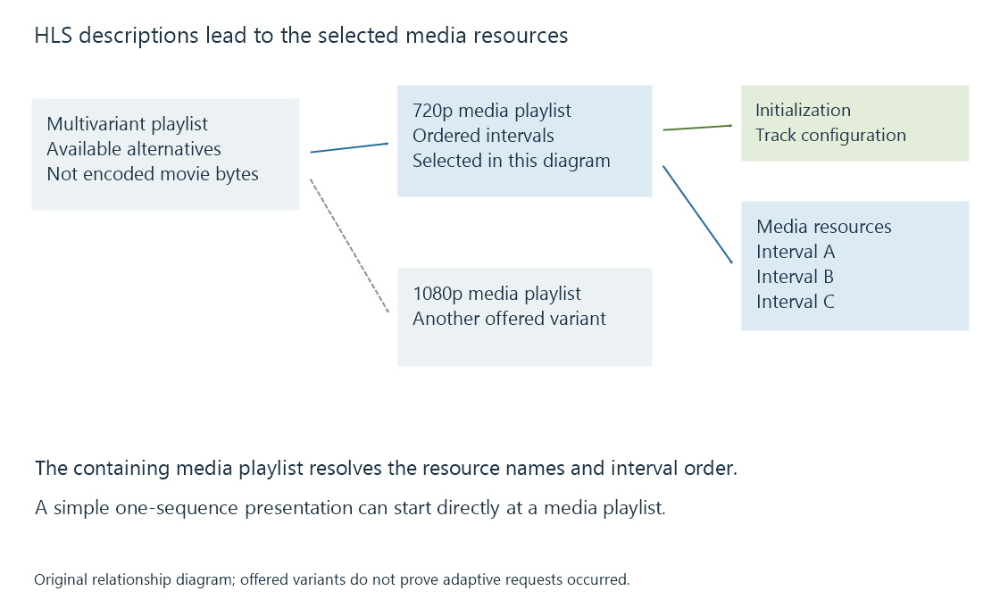

HTTP Live Streaming (HLS)
HTTP Live Streaming describes a media presentation through playlists that direct a player to successive media intervals and, when offered, alternative representations.
HTTP Live Streaming, usually called HLS, lets a player discover a media presentation through playlists and retrieve its media over HTTP. An .m3u8 resource usually contains text describing other resources. It is a starting point for playback rather than a video codec.
HLS can carry the output of an Emby session, but its presence does not identify whether video was copied, audio was converted or video was newly encoded. Those are stream-operation decisions.
A playlist leads to the media
An HLS presentation may begin with a multivariant playlist, called a Master Playlist in RFC 8216. It describes available variant streams and associated rendition groups. A chosen variant leads to a media playlist, which identifies successive media intervals.
A simple presentation can start directly at a media playlist. No multivariant layer is needed when the player is being given one sequence.

A typical request journey is:
- Obtain the starting playlist.
- Select a suitable variant and associated tracks when alternatives exist.
- Read the selected media playlist.
- Obtain required initialization and media resources.
- Prepare and present samples while retrieving later media ahead.
These are responsibility boundaries, not a required one-request-at-a-time schedule. A player can overlap retrieval, parsing and presentation. The details of the text appear in HLS playlists.
Format, track and quality are separate choices
HLS does not mean “H.264 in a Transport Stream.” Its media formats include fragmented MP4 and other defined arrangements. The receiver still needs support for the actual container, encoded streams and selected presentation features.
| Property | Example question |
|---|---|
| Delivery protocol | Is this presentation described using HLS? |
| Media packaging | Are the intervals fragmented MP4 or another supported format? |
| Video encoding | Can the receiver decode this H.264 or HEVC configuration? |
| Rendition selection | Which audio language or subtitle rendition was chosen? |
| Representation selection | Does another suitable quality cover the same programme time? |
An alternate language is a rendition choice. Moving to a lower-rate video representation is an adaptation choice. Merely listing multiple languages does not create a bitrate ladder.
A server can publish HLS for a single session-specific conversion. In that case the player may receive one representation, even though HLS can also describe several. Adaptive bitrate streaming requires additional alternatives and selection behavior.
A finite presentation and a growing presentation publish differently
A complete on-demand media playlist can describe the whole sequence and indicate that no more segments will be added. A live media playlist changes as new intervals become available; older intervals may leave its published window.
A player of the changing presentation needs refreshed information. It cannot obtain future media simply by predicting a filename. Publication controls which intervals are available and which timing context accompanies them.
HLS low-latency extensions add mechanisms such as partial segments and more responsive playlist retrieval. They are developed in Low-latency streaming. RFC 8216 is an informational 2017 publication describing protocol version 7; it is a useful baseline rather than a complete account of later extensions.
See Also
- HLS playlists: variants, media order and live windows
- HLS media segments and initialization
- Adaptive bitrate streaming and representation selection
- Common Media Application Format (CMAF)
- Low-latency streaming and the live presentation delay
- Direct Stream in Emby